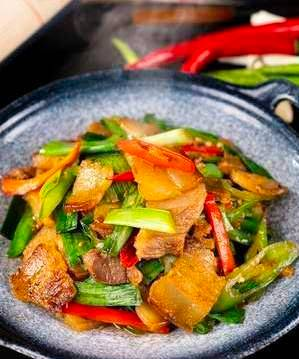

EAT & DRINK
FLAVOUR FIESTA
LOCAL DELICACIES
Bold. Exciting. Flavourful. Liyue cuisine.
Liyue has two main culinary styles: the Li style, which focuses on bold, rich flavors using ingredients picked from the mountains, and the Yue style, which favors lighter-flavored seafood. The two styles have a long history in Liyue and have been locked in bitter rivalry for just as long; fans of one style often clash with fans of the other.
ADEPTUS' TEMPTATION
A complex, famous type of Liyue cuisine, in which specially selected ingredients are submerged and slowly bowled into soup stock. The recipe scribbled from memory alone was enough to urge the adepti to once again return to the world of men.
BLACK-BACK PERCH STEW
A poached fish dish. The fresh and tasty fish fillets are tender and juicy. The secret to this recipe is adding powdered Violetgrass into the heated oil to give the dish that aromatic scent. It's spicy, but not too spicy.
JADE PARCELS
An exquisite-looking dish. The ham's sweetness is locked inside the fresh vegetables, drizzled with a spicy broth. Delicious is an understatement.
SQUIRREL FISH
A hard-to-prepare fish dish. The fish is first completely deboned before crisscross cuts are made on the skin. Coated in flour and deep-fried to a golden-brown color, then served with ketchup drizzled on top, it is tender and juicy on the inside and crispy on the outside.
TIANSHU MEAT
A braised meat dish. The cut of meat is a happy medium between lean and fatty, and has been braised to smoking perfection. The ingredients glisten, and are soft but not greasy.
TRIPLE LAYERED CONSOMME
A neatly arranged dish. The ham, fowl, and bamboo shoots have been sliced into threads of equal length, and they've been laid out neatly in the soup bowl after being steamed at high heat, before being covered in consommé. The layers are distinct, and the mouthfeel is salty yet fresh.
UNIVERSAL PEACE
Colorful staple food. Maintains perfect balance between soft and fragrant rice and all kinds of carefully selected sweet ingredients. This dish is mainly known for its meaning as a symbol of prosperity and peace, and less so for its taste.
JUEYUN GUOBA
One of Liyue's specialty snacks. Stir-fried ham and Jueyun Chili sprinkled on a crispy crust made from Rice and Horsetail create a refined, meaty snack that transforms humble Rice into a hot delicacy.
BOUNTIFUL YEAR
Luxurious and exquisite raw fish. The fish is sliced thinly and arranged in the shape of a flower before a ring of side dishes is set all around it. The side dishes will be mixed with the raw fishbefore consumption — this act is said to ensure that the coming year will be smooth-sailing.
LOTUS FLOWER CRISP
One of Liyue's traditional snacks. Sweet stuffed lotus wrapped in a crispy, deep-fried crust. Its layers of flower petals unravel perfectly in the palm of your hand.
CHICKEN TOFU PUDDING
A dish made with great precision. The finely-diced chicken breast is stirred strongly and added into a soup that has various other minced meats within, before being cooked over a small flame. The result is light and elegant, and it tastes like tofu pudding.
MORA MEAT
A large hunk of minced meat packaged inside of a pastry. When you split the pastry in two, minced meat spills out. The taste of meat grease is all but gone, and the baking process has brought out the sweetness of the pastry.
STONE HARBOR DELICACIES
Wok-fried vegetarian food. A stir-fried selection of three ingredients hailing from Liyue. Though the methodology is simple, it brings out the intense, innate flavors of the ingredients, and does not fade in brilliance when compared to some high-class delicacy.
COME AND GET IT
A dish made out of a luxurious variety of ingredients. There is no great refinement in the making of this food, and it appears in Liyue often during festival season. Whenever this dish is served up, the person at the head of the table will invite everyone to dig in, saying "Come on, eat, eat," hence the name.
CRAB ROE TOFU
A dish with a tender mouthfeel. Crab roe is stir-fried till the oil within oozes out before being added to boiled tofu and accented with broth. Simple, yes, but gloriously fresh.
GOLDEN SHRIMP BALLS
A deep-fried shrimp dish. The aroma assaults your senses, while the crispy potatoes bring out the light sweetness of the shrimp meat. This, in tandem with its cute, small shape, makes it very enticing indeed.
BACK TO TOP
TOP PLACES
The best food places in Liyue.
1. WANMIN RESTAURANT
A famous restaurant known in Chihu Rock. Some say that the goal of this restaurant is to keep everyone on earth well fed, while others believe that it strives to unify all the regional cuisines of the world. Either way, with its unique dishes, Wanmin Restaurant is surely a place worth visiting. If you really don't have time, why not grab some takeout?
SPECIALTIES:
Wanmin Restaurant's Boiled Fish
Squirrel Fish
Dragon Beard Noodles (featured)
LOCATION:
23 Chihu Rock, Liyue Harbour, Sea of Clouds, Liyue
2. LIULI PAVILION
Liuli Pavilion literally "Glaze Pavilion" is the leading establishment for Li-style cuisine in Liyue. The Li-style focuses on bold, rich flavors using ingredients picked from the mountains, promising to fill your senses with the freshest, earthy flavors.
SPECIALTIES:
Stone Harbor Delicacies
Noodles with Mountain Delicacies
Cured Pork Dry Hotpot (featured)
Tianshu Meat
LOCATION:
100 Feiyun Slope, Liyue Harbour, Sea of Clouds, Liyue
3. XINYUE KIOSK
Xinyue Kiosk is renowned as the most authentic restaurant for Yue cuisine, just as Liuli Pavilion is to Li cuisine. As a result, Xinyue Kiosk's dishes are primarily seafood based, which is Yue cuisine's specialty.
Due to its high reputation, Xinyue Kiosk is rather expensive to dine at and has a three-month waitlist.
SPECIALTIES:
Golden Crab (featured)
Golden Shrimp Balls
Fullmoon Egg
Stir-Fried Fish Noodles
LOCATION:
102 Feiyun Slope, Liyue Harbour, Sea of Clouds, Liyue
4. WANGSHU INN
A landmark within Dihua Marsh, built upon a massive stone pillar. As most of the patrons that stop here are traveling merchants, the inn provides an area for them to trade and set up stalls. Even though it is primarily an inn, it is the only place in the entire Liyue where Almond Tofu can be found. Said to be the favourite of an adeptus, it has a silky-smooth texture with a long-lasting aroma of almond. A must-try if you are in the area.
SPECIALTIES:
Almond Tofu (featured)
Matsutake Meat Rolls
Jueyun Chili Chicken
LOCATION:
1 Bishui Plain, Liyue
5. EMERALD MAPLE INN
Another inn on this list, this one offers too, a great view as it overlooks Luhua Pool. Due to its relatively remote location, it's a great place to sit down and have a cup of hot Liyue specialty tea in the midst of your travels. The inn also serve some homecooked local dishes to recharge your energy.

SPECIALTIES:
Pop's Tea (featured)
Mora Meat
Stir-fried Filet
LOCATION:
2 Luhua Pool, Qiongji Estuary, Liyue
BACK TO TOP